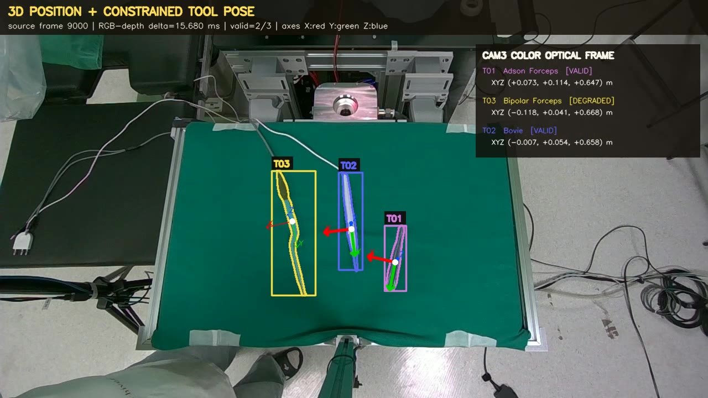
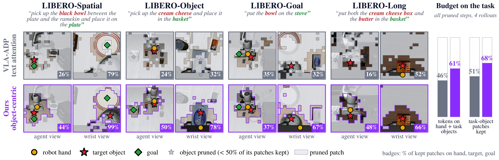

Multi-camera views
Wide operating-room context and high-resolution task-area observations.
Explore how we identify task-relevant visual evidence in operating rooms and embodied manipulation environments.
We are developing a multi-camera RGB-D perception stack that recognizes instruments, hands, and bleeding regions, then aligns this evidence for downstream humanoid planning and operating-room assistance.

Tool recognition and tracking are combined with depth to estimate instrument position and constrained orientation in 3D.
Wide operating-room context and high-resolution task-area observations.
Few-shot tool annotation, tracking, hand pose, and bleeding-region detection.
RGB-D cues and camera calibration connect observations across viewpoints.
Structured perception signals become inputs to downstream robotic systems.
Turn complex, multi-view surgical observations into stable spatial evidence that an assistive system can use for situational understanding and action planning.
We reduce redundant visual computation in vision-language-action models by preserving patches around the robot hand, task objects, goals, and the spatial routes that connect them.

Across diverse manipulation tasks, object-centric pruning concentrates the visual budget around the hand, target, goal, and their spatial relationships.
Visual tokens are extracted from agent and wrist-camera observations.
A learned scorer prioritizes patches related to interaction geometry.
Fine-grained interaction phases can retain full visual context when needed.
Selected visual tokens feed the unchanged policy for action prediction.
Make embodied policies more efficient without discarding the visual evidence needed to understand task objects, goals, and physical interaction.